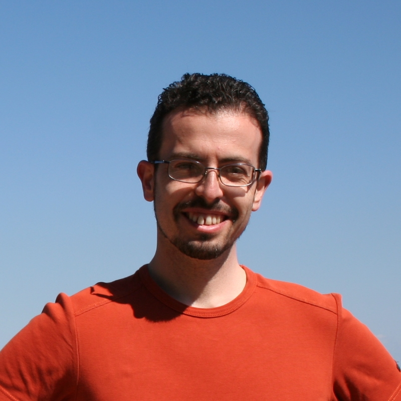
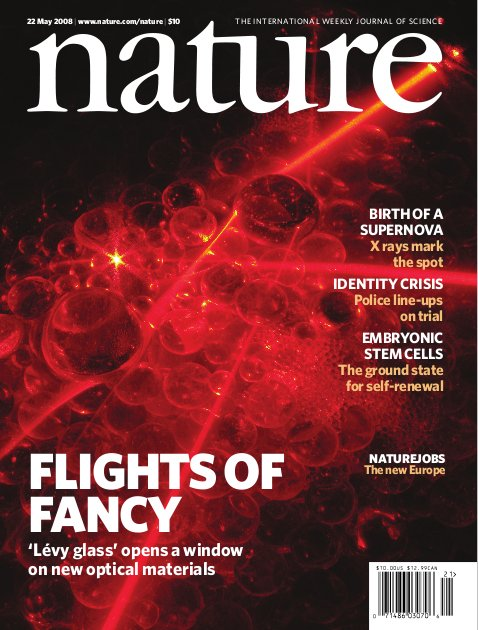
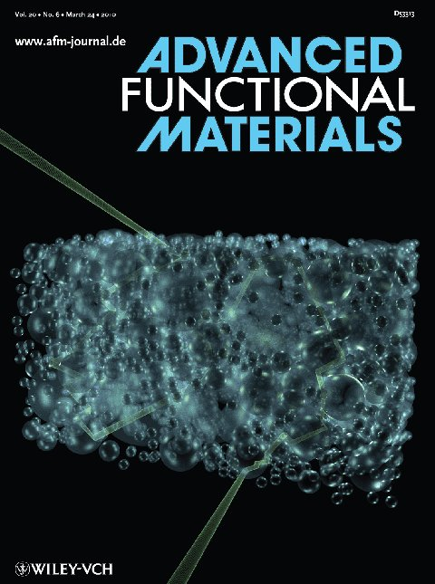
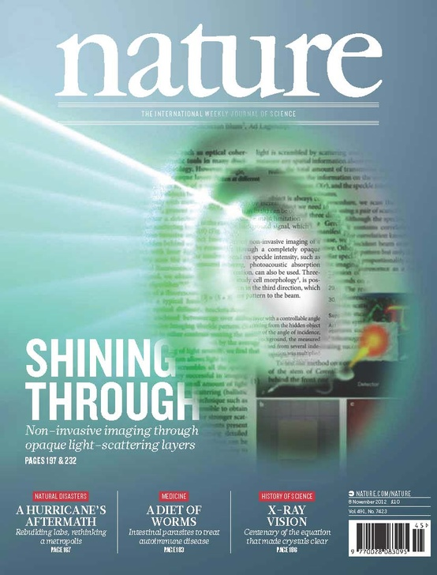

For a complete
Curriculum Vitae see here.
I received a PhD and M.Sc. degree (both in Physics) at the University of Florence (Italy), respectively in February 2008 and April 2004. From May 2004 to December 2004 (before my PhD started) I had a fellowship there to work on random lasing.
From January 2008 to April 2010 I had a postdoctoral position at the European Laboratory for Non-Linear Spectroscopy (LENS) on the project “Transport of light in disordered systems”.
From April 20010 to December 2010 I was a postdoctoral fellow in the COPS group at the University of Twente (The Netherlands) on the project “Breakdown of universal transport: is there symmetry between absorption and gain?”.
From December 2010 to December 2012 I held a joint position as Researcher at the University of Florence and as Guest scientist at the University of Twente.
From March to August 2013 I worked as a post-doc at the Institute Langevin and in September 2013 I started an appointment as a Lecturer at the University of Exeter, where I now lead a research group.
My first scientific achievement was the experimental demonstration of Necklace states, extended eigenmodes in the Anderson Localized regime (1,2). After that I worked on the influence of environment on photoluminescence and light transport (3,4) studying structures that spanned from photonic crystals (5), to heterostructures (6) to photonic glasses (7,8).
Since 2007 I started working on anomalous transport of light, developing a tunable material where light transport exhibits a superdiffusive behavior (9,10,11). To complement my experimental results I developed numerical and analytical theory to model incoherent superdiffusive transport in quenched (12) and bounded systems (13).
Lately I also become interested in the use of optical wavefront-shaping techniques to control and manipulate light propagation in disordered structures (14,15).
I received a PhD and M.Sc. degree (both in Physics) at the University of Florence (Italy), respectively in February 2008 and April 2004. From May 2004 to December 2004 (before my PhD started) I had a fellowship there to work on random lasing.
From January 2008 to April 2010 I had a postdoctoral position at the European Laboratory for Non-Linear Spectroscopy (LENS) on the project “Transport of light in disordered systems”.
From April 20010 to December 2010 I was a postdoctoral fellow in the COPS group at the University of Twente (The Netherlands) on the project “Breakdown of universal transport: is there symmetry between absorption and gain?”.
From December 2010 to December 2012 I held a joint position as Researcher at the University of Florence and as Guest scientist at the University of Twente.
From March to August 2013 I worked as a post-doc at the Institute Langevin and in September 2013 I started an appointment as a Lecturer at the University of Exeter, where I now lead a research group.
My first scientific achievement was the experimental demonstration of Necklace states, extended eigenmodes in the Anderson Localized regime (1,2). After that I worked on the influence of environment on photoluminescence and light transport (3,4) studying structures that spanned from photonic crystals (5), to heterostructures (6) to photonic glasses (7,8).
Since 2007 I started working on anomalous transport of light, developing a tunable material where light transport exhibits a superdiffusive behavior (9,10,11). To complement my experimental results I developed numerical and analytical theory to model incoherent superdiffusive transport in quenched (12) and bounded systems (13).
Lately I also become interested in the use of optical wavefront-shaping techniques to control and manipulate light propagation in disordered structures (14,15).
My covers
|  |
 |
| “A Lévy flight for light”, Nature 453, 495 (2008). (pdf) | “Engineering disorder in superdiffusive Lévy glasses”, Advanced Functional Materials 20, 965 (2010). (pdf) |
|  |
|
| "Non-invasive
imaging through opaque scattering layers", Nature 491, 232 (2012). (pdf) |
{kind=link}
{kind=link}
Contact details :
- Postal address:
University of Exeter
Physics building
Stocker Road
Exeter
EX4 4QL
United Kingdom - E-mail: j.bertolotti@exeter.ac.uk
- Skype: j_bertolotti